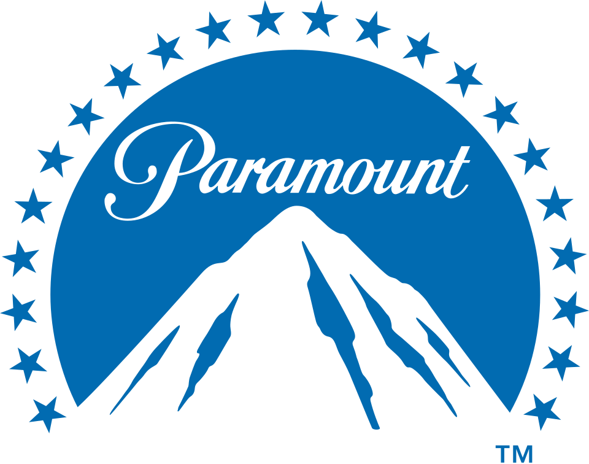
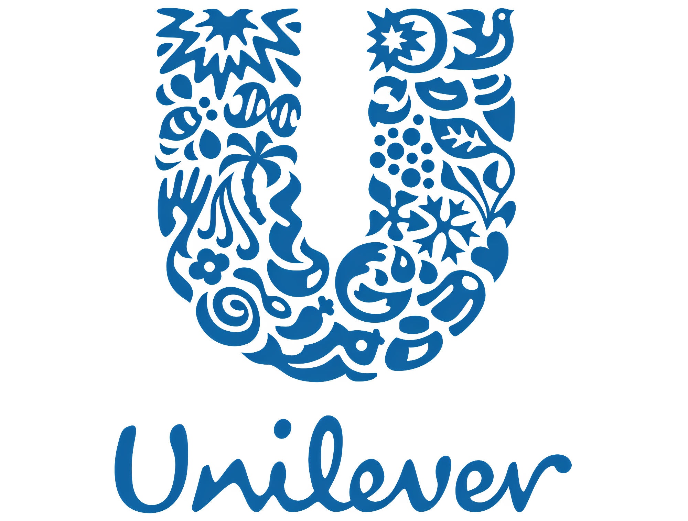

SHEKHAAR DOOSHI
Global Production & Studio Operations Leader
24+ years of experience building high-performance teams, scaling production organizations, optimizing delivery operations, and leading global programs across CGI, VFX, immersive, digital content, and marketing production.
Executive Summary
I help organizations scale production capability, improve operational efficiency, build resilient teams, and deliver exceptional client outcomes. Throughout my career I have successfully led multidisciplinary teams, established delivery frameworks, optimized production pipelines, and managed large-scale creative and technical programs across international markets.
Selected Achievements
200+
Built and led production, operations and delivery teams across global organizations.
24+
Years of leadership experience across production, CGI, VFX and digital content.
30%
Operational efficiency improvements through process optimization and governance.
Global
Cross-functional leadership across multiple regions, stakeholders and delivery teams.
Core Expertise
Studio Leadership
Scaling operations, governance, workforce planning, resource optimization and delivery excellence.
Production Management
Leading end-to-end production workflows across digital, CGI, VFX and immersive projects.
Program Leadership
Managing complex initiatives involving multiple stakeholders, teams and global partners.
People Development
Building high-performing teams and leadership pipelines that sustain long-term growth.
Client Success
Driving strategic relationships and ensuring exceptional delivery outcomes.
Operational Excellence
Creating scalable systems, KPIs, governance frameworks and delivery processes.
Career Journey
White Turtle Studios
Studio & Production Leadership
Happy Finish
Production & Operations Leadership
Technicolor
Program & Delivery Leadership
LRN
Global Production Operations
Digitales Studios
Production Leadership
3D Upside Down
Creative Production Management
IOL Netcom
Early Career Foundation
Portfolio Highlights
Studio Scaling & Operations
Built scalable operating models, workforce planning frameworks, governance structures and delivery systems for growing production organizations.
Production & Delivery Leadership
Led multidisciplinary production teams delivering CGI, VFX, immersive experiences, marketing content and digital assets.
Global Program Management
Managed complex cross-functional programs involving creative, technical and business stakeholders across geographies.
People & Culture
Developed high-performing teams, mentoring future leaders while creating accountability, collaboration and operational excellence.
Visual Portfolio
Creative & Visual Work
Throughout my career I have led and delivered CGI, VFX, immersive, marketing production and digital content initiatives across global brands and agencies.
A curated collection of visual projects can be viewed on Behance.
Visit Behance Portfolio
Brands & Industries Served




Leadership Case Studies
Scaling Production Teams
Challenge:
Rapid growth created operational complexity and resource planning challenges.
Approach:
Implemented governance frameworks, workforce planning and delivery controls.
Outcome:
Improved predictability, utilization and operational efficiency.
Global Delivery Operations
Challenge:
Distributed teams required consistent communication and delivery standards.
Approach:
Created scalable workflows, reporting mechanisms and stakeholder alignment.
Outcome:
Enhanced collaboration, transparency and delivery performance.
Industries Served
Brands & Industries Served


Leadership Philosophy
I believe great studios are built through clarity, accountability and people-first leadership. My approach focuses on creating scalable operational systems while empowering teams to perform at their highest potential. Successful delivery is achieved when creative excellence, business objectives and operational discipline work together.
Let's Connect
Open to leadership opportunities in Production, Studio Operations, Program Management, Delivery Leadership and Creative Technology.
LinkedIn: linkedin.com/in/shekhaardooshi
Email: shekhar.doshi@gmail.com